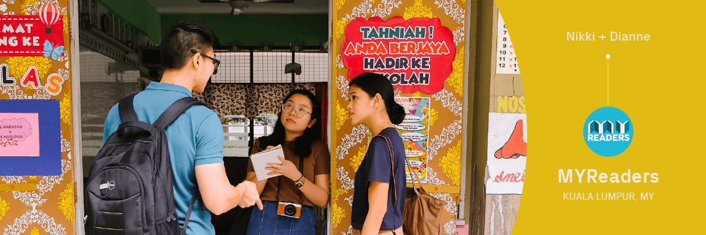
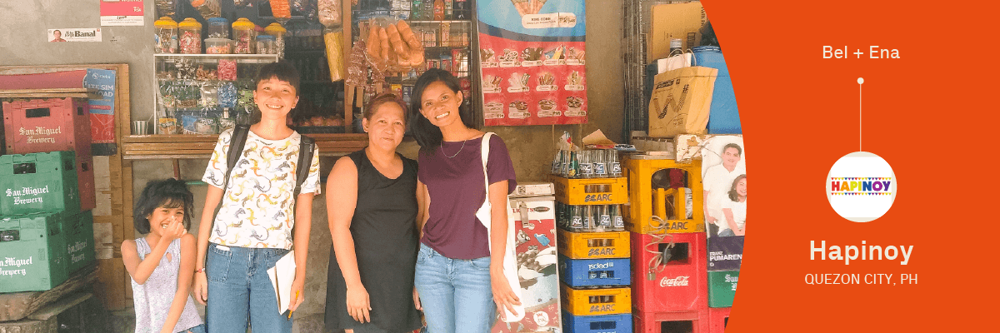
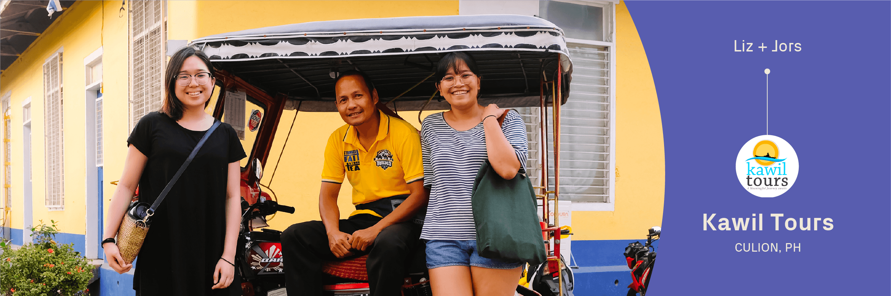
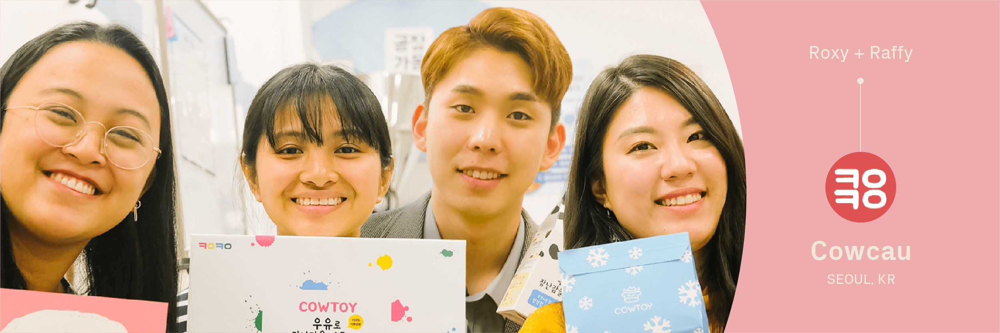

Social challenges demand collaborative projects—people from different fields and contexts need to come together. This is something we’ve always believed in at Works of Heart, and thanks to the support of Ashoka and the Robert Bosch Foundation, we were able to create a project that, through design and creativity, provides new perspectives and possibilities for impact-driven organizations.
Creative Connect is a design exchange that allows members of Works of Heart to engage and work with nonprofits and social enterprises in Asia, with the aim of using design for social impact. The program is designed with both the organizations and designers in mind, thus creating an exchange that is meaningful and valuable to both parties.
For the organizations, the primary objective is to elevate their impact. Through the exchange they gain accessible and effective design to catapult their advocacies forward. The designer participates in the organization’s day-to-day operations, crafts a holistic design proposal based on a clear problem, and eventually shares it with the organization for feedback and possible implementation.
For the Works of Heart designers, the goal is to further build capabilities and experience, especially in the field of social impact. The immersion and experience will allow the designer to learn about working in a different culture and country, to navigate new contexts and scenarios, and to see the possibilities of social impact through a different lens.
Creative Connect is a design exchange that allows members of Works of Heart to engage and work with nonprofits and social enterprises in Asia, with the aim of using design for social impact.

MYReaders
The English language is not a priority in the Malaysian education system, which thus affects literacy across the country. Through literacy toolkits and programs, MYReaders works with children to turn them into readers with brighter futures.
Celebrating and equipping our mission and mentors
MYReaders, a small team of four, relies on community and student volunteers to run their reading programs. The issue, as we observed, isn’t that children can’t be taught how to read. It’s that those who teach them—volunteers, teachers, and student mentors—are unappreciated, unmotivated, and unequipped. The design solution focuses on celebrating them through a more compelling brand identity and equipping them through proper training and support.
MYReaders’ reading program highlights the reality that education is everyone’s business. Immersing and working closely with them has led us to see this particular dynamic during reading sessions: both student and mentor point at the word they have to read. That’s the inspiration for our design proposal, and the strength of MYReaders—they face each other and they learn together.

Hapinoy
Hapinoy is a social enterprise which partners with microentrepreneurs—particularly sari-sari store owners—through education, linkages to capital, new business opportunities, and technology enablement.
Strengthening the sari-sari store experience
The project focuses on HapiShop, a mobile app developed to help level up sari-sari store owners’ businesses through mobile technology and enables them to sell appliances, gadgets, and entertainment packages without having inventory in their stores. After getting to know sari-sari store owners who actively and inactively use the app, we found out that we can strengthen the sari-sari store experience by adding value to the mobile app system first and building credibility.
Our proposal is to organize information that focuses on long term value for store owners and customers and equip everyone with confidence and knowledge.

Kawil Tours
A community-based social enterprise and the only Culion-based tour operator. They offer private trips, overnight stays, live onboard expeditions, and a historical tour. Culion is known for its difficult past of being a leper colony.
Experiencing the Calamian Islands through the eyes and heart of a local
How does a Culion-based tour operator compete with others who bank on the more famous islands in Palawan such us Coron or El Nido? Because of a hundred years of isolation, Culion’s tourism is still young and underdeveloped compared to that of other islands.
What stood out from Kawil Tours is that the locals have a deep appreciation and understanding of Culion and its surrounding islands. They see Culion as their home that needs to be preserved and protected. This sentiment becomes our anchor in designing the campaign which focuses on an authentic experience from the locals themselves.

CowCau
After observing that many children could accidentally get hurt or die from toys that are said to be non-toxic and child safe, CowCau was founded with the goal of providing safe toys even if they were eaten by curious kids. They manufacture safe and eco-friendly products such as CowToy.
Building a safe world together
Cowtoy as a social venture focuses mainly on creating child-safe products, but they do it under the pulse of innovation. The milk glut in Korea prompted them to find a way to use milk for their main product, helping them address multiple problems with one solution. This drive for innovation gives them a strong vision and clear brand.
The proposal focuses more on storytelling and marketing, especially on how to involve more people behind their advocacy. For the longest time, the Cowcau team was focused on developing and improving their products. Today, we propose that they communicate their vision. Ultimately, their values of safe design, safe education, and safe play can lead to building safe homes and a safe world. This rallies people, especially parents, to be more involved in building a safe world with Cowtoy.
—If you’re an Asian nonprofit, social enterprise, or an impact-driven organization and are interested in joining this program, send us a message at cc@worksofheartph.com.